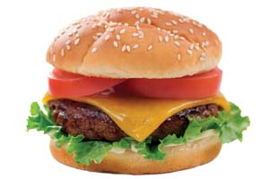

Since 1996, strong evidence has accumulated linking outbreaks of mad cow disease to a fatal neurological disease in humans called variant Creutzfeldt-Jakob disease (vCJD), according to the Centers for Disease Control and Prevention. In cattle herds, the disease seems to appear when “meat byproducts” (beef tallow, bone meal and other cheap protein sources) are added to a herd’s feed. The evidence shows humans can contract the disease when they eat infected beef.
But the debate among federal regulators, meat processors, ranchers and consumer advocacy groups about how best to contain the threat of mad cow disease, or bovine spongiform encephalopathy (BSE), continues to evolve.
In December 2003, inspectors in Washington state discovered the first domestic case of mad cow disease (the animal was later determined to be from Canada). Within days, 53 countries worldwide shut their doors to U.S. beef. A study by the Kansas Department of Agriculture places national beef industry losses at $3.2 to $4.7 billion for 2004 alone.
Yet when Creekstone Farms Premium Beef, a processor in Kansas, attempted to implement a 100 percent testing policy to screen cattle for mad cow disease in its facility, the USDA ordered it to stop. The USDA contends that such testing may provide a false sense of security because most cattle are too young to show symptoms at the time of slaughter. Critics argue that the USDA is opposing more testing because if more infected cattle are found, it will again cause huge losses for the beef industry.
Feeding beef byproducts to cattle was implicated in Great Britain’s mad cow outbreak in the 1980s and ’90s, but the United States didn’t ban this practice until 1997. Canada instituted a similar ban the same year, but has discovered 11 cases since, one as recently as last May.
Global efforts to stop the spread of mad cow continue, but they’re complicated by the fact that scientists still have a lot to learn about the disease. A 2004 survey by the Consumers Union found that 88 percent of Americans think all beef entering the food supply should be tested, but the USDA maintains that its small sampling program is sufficient.
In recent months, a number of countries have lifted their embargoes on U.S. beef imports, but regaining consumer confidence may take more time.
|
 ISTOCKPHOTO/KELLY CLINE Studies have linked variant Creutzfeldt-Jakob disease to eating meat from cattle infected with mad cow disease. |
|
|